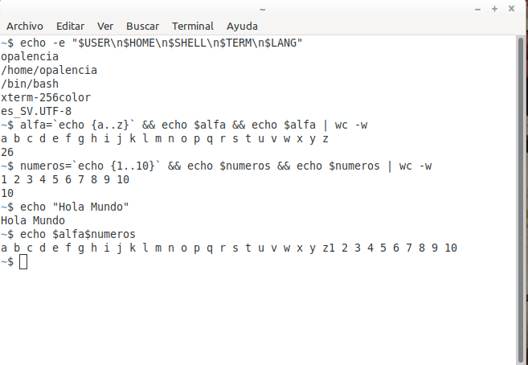

Leer en pantalla o escribir a un archivo el valor de una variable > echo¶
Nombre del comando: echo
Man page online: https://linux.die.net/man/1/echo
Descripción: Mostrar una línea de texto. Este comando es muy útil para imprimir información de ayuda al usuario para que sepa lo que una aplicación está haciendo; dicha información por lo general se almacena en variables temporales o permanentes, las cuales fueron creadas por la distro o definidas por el usuario. Algunas variables de entorno muy importantes que se crearon al instalar la distro son: “$PATH”, “$HOME”, “$USER”, “$PWD”, “$SHELL”, “$TERM”, “$LANG”, “$HOSTNAME”, “$RANDOM”. No olvidar que en linux sí importa distinguir entre mayúsculas y minúsculas. Lo recomendable es que el texto a imprimir con este comando esté encerrado en comillas (“texto así”) normales. El símbolo de dólar “$” le indica al comando echo que lo que se quiere imprmir es una variable o parámetro.
Man page local: $ man echo o $ man echo > echo.txt
Instalado por defecto: Sí, al menos en Linux Mint.
Algunas Opciones:
-e Habilitar la interpretación de los escapes de barra invertida. Es obligación anteponer primero este parámetro para que funcionen los demás parámetros de abajo, de lo contrario se imprimirá el texto tal y cual se escribe.
\n Imprimir una línea nueva.
\t Imprimir un espacio horizontal de la tecla tab.
\v Imprimir un espacio vertical de la tecla tab.
Ejemplo 1: $ echo -e "$USER\n$HOME\n$SHELL\n$TERM\n$LANG", en este ejemplo imprimo en pantalla varias variables de entorno creadas por la distro y le digo que muestre cada variable en una sola línea.
Ejemplo 2: $ alfa=`echo {a..z}` && echo $alfa && echo $alfa | wc -w, en este emplo creo una variable temporal “alfa” para almacenar el alfabeto usado en mi idioma castellano y luego imprimo dicha variable, posteriormente cuento la cantidad de palabras que usa dicha variable, en este caso el número de letras que tiene mi alfabeto del idioma castellano.
Ejemplo 3: $ numeros=`echo {1..10}` && echo $numeros && echo $numeros | wc -w, en este ejemplo imprimo los números del 1 al 10 con echo, solo con el objetivo de mostrar la variedad de cosas que este comando permite imprimir. No se limita solo a imprimir texto.
Ejemplo 4: $ echo -e "H\no\nl\na\v\nM\nu\nn\nd\no", esto es lo básico de este comando, imprimir en pantalla una línea de texto contenida entre comillas comunes. Para este caso imprimo en pantalla la frase “Hola Mundo” de manera vertical.